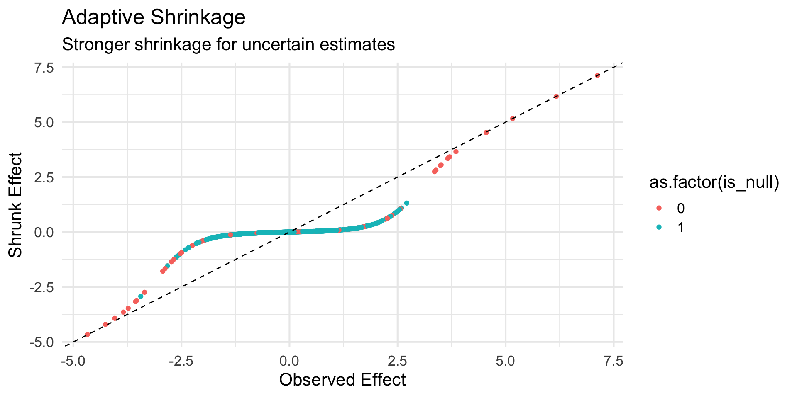
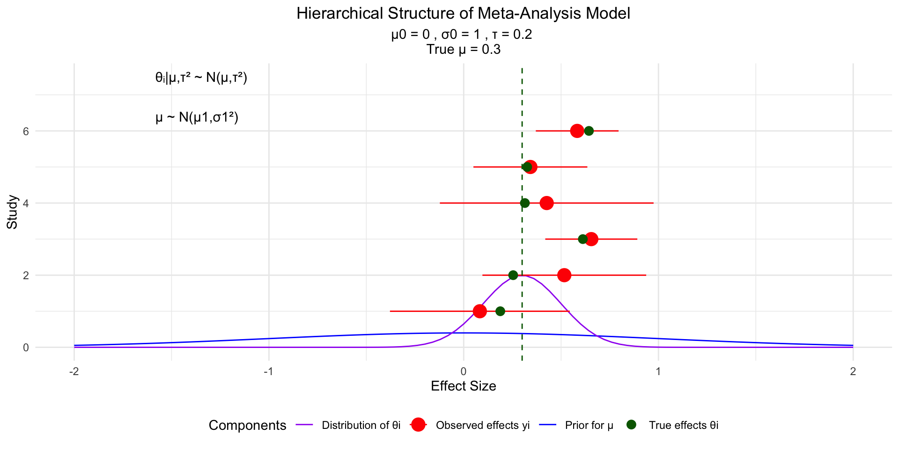

A Practical Primer on Bayesian Statistics
Sarah Urbut, MD PhD
2025-03-29
Overview
In this seminar, we’ll (attempt to) cover key Bayesian concepts critical for modern genomics:
- P-values vs. Posterior Probabilities: Why Bayesian thinking helps avoid misinterpretations
- Conjugate Models: Elegant solutions for population genetic inference
- Mixture Models: Powerful tools for complex genomic data
- Bayesian Clinical & Adaptive Designs: Learning and adapting as data accumulates
1. The P-value Paradox
Lindley’s Paradox
“A result that is statistically significant may not be scientifically significant” - Dennis Lindley (1957)
Note
Lindley’s 1957 paper demonstrated how p-values and Bayes factors can lead to contradictory conclusions [@lindley1957]
The Evidence Paradox
Sometimes a result can be unlikely under the null hypothesis but even more unlikely under the alternative!
Example
The P-value Fallacy
What we want: P(Hypothesis|Data)
What we get: P(Data|Null Hypothesis)
Question for the class: What is a P value?
Prepare to be amazed: Frequentists are all Bayesians! (under some qualifications)
Probabilistic Interpretation of Estimates
In the Bayesian framework:
- Parameters are random variables with distributions, not fixed values
- Uncertainty is represented directly through probability distributions
- All evidence is integrated coherently within a probability framework
- Natural quantification of uncertainty without hypothetical repeated sampling
- Interpretation is direct and intuitive for researchers and clinicians
Bayesian vs. Frequentist Intervals
| Bayesian Credible Interval | Frequentist Confidence Interval |
|---|---|
| “95% probability the parameter is between a and b” | “If we repeated the experiment many times, 95% of intervals constructed would contain the true parameter” |
| Directly interpretable as probability statement about the parameter | Cannot be interpreted as probability statement about the parameter |
| Incorporates prior information | No mechanism to incorporate prior information (why would you run?) |
| Can be asymmetric, reflecting asymmetric uncertainty | Typically symmetric by construction |
| Conditioning on the observed data | Based on hypothetical repeated (theoretical) sampling |
Bayes’ Theorem - The Core Idea
\[P(H|D) = \frac{P(D|H) \times P(H)}{P(D)}\]
Where:
- \(P(H|D)\) is the posterior probability - what we want to know
- \(P(D|H)\) is the likelihood - how probable the data is under our hypothesis
- \(P(H)\) is the prior probability - what we knew before
- \(P(D)\) is the evidence - a normalizing constant
Simply: Posterior ∝ Likelihood × Prior
Bayesian Updating: Visual Intuition

P-values vs. Posterior Probabilities
The Question
As scientists, we want to know:
“What is the probability that my hypothesis is true, given my data?”
But traditional p-values answer a different question:
“What is the probability of observing data this extreme or more extreme, if the null hypothesis is true?”
This mismatch causes persistent misinterpretations.
P-values vs. Bayes Factors: Definitions
P-value:
- \(P(data|H_0)\) - probability of data given null hypothesis
- Measures compatibility of data with null hypothesis
- Does not directly measure evidence for alternative
Bayes Factor:
- \(BF_{10} = \frac{P(data|H_1)}{P(data|H_0)}\) - ratio of likelihoods
- \(BF_{01} = \frac{P(data|H_0)}{P(data|H_1)}\) - ratio of likelihoods
- Directly compares evidence for alternative vs. null OR null vs alternative
- Tells you how much to update your beliefs
The P-value Fallacy
Scenario: Testing a SNP for disease association
Traditional approach:
- Obtain p = 0.001
- Declare “significant association”
- Publish result
The fallacy:
- p = 0.001 means “1 in 1000 chance of seeing this data if no association exists”
- NOT “999 in 1000 chance the association is real”
Visualize

Key insight: With a realistic prior of 1/1000, a “significant” p-value of 0.001 only gives ~18% posterior probability of true association! (app interlude) Shiny P!
The Mathematical Connection
Under certain conditions, p-values can be converted to minimum Bayes factors:
\[BF_{min} ≈ -e \times p \times \log(p)\]
Meaning even the most favorable interpretation of a p-value provides less evidence than typically assumed:
| p-value | Minimum Bayes Factor |
|---|---|
| 0.05 | 0.37 |
| 0.01 | 0.084 |
| 0.001 | 0.0083 |
What is the Minimum Bayes Factor?
The Minimum Bayes Factor is calculated as:
\(\text{MBF} \approx -e \times p \times \log(p)\)
This formula (derived by Sellke, Bayarri, and Berger) represents the smallest possible Bayes factor that could correspond to a given p-value, regardless of the specific alternative hypothesis being tested (i.e p(D|H0)/p(D/H1))
Why “Minimum”?
It’s called “minimum” because:
- It assumes the most favorable conditions for the alternative hypothesis
- It represents the strongest possible evidence against the null that could be derived from a p-value
- It’s the smallest value the Bayes factor could take (stronger evidence against null = smaller Bayes factor)
Interpretation
The MBF represents the ratio of likelihoods:
\(\text{MBF} = \frac{P(\text{data}|H_0)}{P(\text{data}|H_1)}\)
For example, with p = 0.05: MBF = 0.37 This means the data are at most 1/0.37 ≈ 2.7 times more likely under the alternative than the null
Even with the most optimistic assumptions, the evidence against the null is modest
Why This Conversion Matters
This conversion from p-values to MBF is important because:
- It provides a more calibrated interpretation of statistical evidence
- It shows that conventional “statistical significance” (p < 0.05) actually represents fairly modest evidence
- It helps researchers avoid overinterpreting p-values
- It establishes a link between frequentist and Bayesian approaches
p-values systematically overstate the evidence against the null hypothesis.
When converted to the Bayes factor scale, even a seemingly impressive p-value often translates to much more moderate evidence against the null hypothesis than most researchers would expect.
P-values vs. Bayes Factors in Genomics

The GWAS significance threshold of p < 5×10⁻⁸ corresponds to much stronger evidence than p = 0.05.
Note
Berger and Sellke (1987) showed that p-values systematically overstate evidence against the null [@berger1987]
Interpreting Bayes Factors
Bayes factors have a natural interpretation:
| Bayes Factor (\(BF_{10}\)) | Evidence for H1 |
|---|---|
| 1 - 3 | Barely worth mentioning |
| 3 - 10 | Substantial |
| 10 - 30 | Strong |
| 30 - 100 | Very strong |
| > 100 | Extreme |
A \(BF_{10} = 10\) means the data are 10 times more likely under H1 than H0.
From Bayes Factor to Posterior Probability
Bayes’ theorem connects all the pieces:
\[P(H_1|data) = \frac{P(data|H_1)P(H_1)}{P(data|H_1)P(H_1) + P(data|H_0)P(H_0)}\]
This can be rewritten using the Bayes factor:
\[P(H_1|data) = \frac{BF_{10} \times P(H_1)}{BF_{10} \times P(H_1) + P(H_0)}\]
Posterior Odds Formulation
A simplified version:
\[\text{Posterior Odds} = \text{Bayes Factor} \times \text{Prior Odds}\]
Or:
\[\frac{P(H_1|data)}{P(H_0|data)} = BF_{10} \times \frac{P(H_1)}{P(H_0)}\]
This clearly shows how Bayes factors calibrate our prior beliefs (and we can use this on the wards!).
Benefits of Bayes Factors for Genomics
- Calibrated evidence: Direct measure of evidence strength
- Multiple testing: Naturally incorporates prior odds
- Replication: Coherent framework for combining evidence across studies
- Diverse hypotheses: Can compare non-nested models
- Positive evidence: Can support null hypothesis, not just reject it
- Study design: Allows stopping when evidence is sufficient
Key Takeaways
- P-values answer a different question than most scientists ask
- Bayes factors directly compare competing hypotheses
- Even “significant” p-values provide weaker evidence than typically assumed
- Bayes factors have a natural interpretation as evidence strength
- Converting to posterior probabilities requires considering prior odds
- In genomics, this perspective helps manage false discovery rates
The Fallacy of P-values
P-values answer a counterfactual question: “If there were no effect, how surprising would these data be?”
But researchers want to know: “What is the probability this association is real?”
This disconnect leads to systematic misinterpretation
2. The Multiple Testing Challenge
Modern genomics routinely tests thousands to millions of hypotheses:
- 20,000+ genes in differential expression
- Millions of variants in GWAS
- Billions of potential interactions
The consequence: Many “significant” findings are actually false positives.
The Traditional Approach
When testing m hypotheses at significance level α:
- Expected number of false positives: m × α
- With m = 1,000,000 and α = 0.05: 50,000 false positives!
Frequentist solutions:
- Bonferroni correction: α/m
- False Discovery Rate (FDR) control (Benjamini-Hochberg)
- Family-wise error rate (FWER) control (Drawing time)?)
Visualizing Multiple Hypothesis Testing

The challenge: Separating true signals (blue) from noise (gray) when true effects are rare. The Bayesian solutions …
Local False Discovery Rate (LFDR)
The key insight from Matthew Stephens’ work:
Instead of controlling the overall FDR, we can calculate the probability that each individual test is a false discovery:
\[\text{LFDR}(z) = P(H_0|z) = \frac{(1-\pi_1)f_0(z)}{f(z)}\]
Where:
- \(\pi_1\) = proportion of true effects
- \(f_0(z)\) = null distribution
- \(f(z)\) = observed distribution
plotting
Code
set.seed(123)
n_tests <- 10000
pi1 <- 0.10 # 10% true effects
sigma <- 4 # Effect size parameter
# Generate true and null effects
n_true <- round(n_tests * pi1)
n_null <- n_tests - n_true
# Null effects
z_null <- rnorm(n_null, 0, 1)
# True effects
z_true <- rnorm(n_true, 0, sqrt(1 + sigma^2))
# Calculate LFDR for each z-score
calc_lfdr <- function(z, pi1=0.10, sigma=4) { # Match the parameters used to generate data
f0 <- dnorm(z, 0, 1)
f1 <- dnorm(z, 0, sqrt(1 + sigma^2))
f <- (1-pi1)*f0 + pi1*f1
(1-pi1)*f0/f
}
# Create data frame
plot_data <- data.frame(
z_score = c(z_null, z_true),
is_true = factor(c(rep(0, n_null), rep(1, n_true))),
lfdr = c(
calc_lfdr(z_null),
calc_lfdr(z_true)
)
)
# Plot with some improvements
ggplot(plot_data, aes(x = z_score, y = lfdr, color = is_true)) +
geom_point(alpha = 0.2, size = 0.5) + # Smaller points, more transparency
geom_hline(yintercept = 0.1, linetype = "dashed", color = "darkgreen") +
scale_color_manual(values = c("0" = "gray70", "1" = "blue"),
labels = c("Null", "True Effect"),
name = "Truth") +
labs(title = "Local False Discovery Rate",
subtitle = paste0("π₁ = ", pi1, ", σ = ", sigma),
x = "Z-score",
y = "LFDR") +
theme_minimal(base_size = 16) +
coord_cartesian(xlim = c(-6, 6)) # F
Why LFDR is Better
- Test-specific: Each test gets its own probability of being false
- Direct interpretation: “This test has 5% chance of being false”
- Natural handling of correlation: No need for independence assumptions
- Flexible: Can incorporate prior information about effect sizes
Empirical Bayes Approach
Matthew Stephens’ key contributions:
- Estimate from data: Learn \(\pi_1\) and effect size distribution from the data
- Adaptive shrinkage: Stronger shrinkage for uncertain estimates
- Correlation structure: Account for LD and other dependencies
Empirical Bayes Approach
Practical Implementation
- ashr: Adaptive shrinkage for effect sizes
- mashr: Multivariate adaptive shrinkage
- flashier: Sparse factor analysis (more on aladynoulli to come … )
The Mathematical Framework
In multiple testing, we have two distributions:
Null Distribution (\(f_0\)): \[f_0(z) = \mathcal{N}(0, se^2)\] This is the standard normal distribution for tests where \(H_0\) is true.
Alternative Distribution (\(f_1\)): \[f_1(z) = \mathcal{N}(0, se^2 + \sigma^2)\] This is a normal distribution with increased variance for tests where \(H_1\) is true.
Overall Distribution (\(f\)): \[f(z) = (1-\pi_1)f_0(z) + \pi_1f_1(z)\] A mixture of null and alternative distributions (estimate posterior probability of non-null components) Homework!
Effect of Prior Variance on Shrinkage
The prior variance (\(\sigma^2\)) directly affects how much we shrink our estimates:
- Small prior variance (\(\sigma^2\) small):
- Alternative distribution is narrow
- Strong shrinkage toward zero
- Conservative estimates
- Higher threshold for calling something significant
- Large prior variance (\(\sigma^2\) large):
Alternative distribution is wide
Less shrinkage toward zero
More willing to accept large effect sizes
Lower threshold for calling something significant
This relationship between prior variance and shrinkage is crucial in genomics:
- For rare variants or small studies: Use smaller \(\sigma^2\) to be conservative
- For common variants or large studies: Can use larger \(\sigma^2\)
- For follow-up studies: Can use previous effect size estimates to inform \(\sigma^2\)
Multivariate Adaptive Shrinkage (mash)
When we have effects across multiple groups (e.g., tissues, conditions), we can borrow strength:
\[\begin{align*} \text{Effects across groups: } & \mathbf{B}_j \sim N(\mathbf{0}, \mathbf{U}_k) \\ \text{Mixture model: } & p(\mathbf{B}_j) = \sum_{k=1}^K \pi_k N(\mathbf{0}, \mathbf{U}_k) \end{align*}\]
Where \(\mathbf{U}_k\) captures different patterns of sharing: - Equal effects across groups - Group-specific effects - Correlated effects - Structured patterns
Understanding Covariance Matrices in Multivariate Normal Distribution
Let’s consider a bivariate normal distribution with covariance matrix U_k:
\[\mathbf{U}\_k = \begin{pmatrix} \sigma^2_1 & \rho\sigma_1\sigma_2 \\ \rho\sigma_1\sigma_2 & \sigma^2_2 \end{pmatrix}\]
where: - \(\sigma\^2_1\) and \(\sigma\^2_2\) are the variances for each trait - \(\rho\) is the correlation coefficient - \(\rho\sigma\_1\sigma\_2\) represents the covariance.
More math
The multivariate normal density is then:
\[\mathbf{x}\|\mathbf{U}\_k) = \frac{1}{2\pi|\mathbf{U}_k|^{1/2}} \exp\left(-\frac{1}{2}\mathbf{x}\^T\mathbf{U}\_k\^{-1}\mathbf{x}\right)\]
Different covariance matrices (_k) lead to different shapes:
- When (\(\rho\) = 0):
- Effects are independent
- Contours form circles/ellipses aligned with axes
- When (\(\rho\) \(\neq\) 0):
- Effects are correlated
- Contours form rotated ellipses
- Direction of rotation determined by sign of ()
How would you get a 1:1 line?

Bringing it home!

- Observed Effects are noisy
- only considering information in one subgroup ignores the hints we get from abound
- sharing is caring!
Conjugate Priors: Why They’re Beautiful
Definition: A prior is conjugate when the posterior has the same distribution family as the prior.
Let’s see this mathematically:
Conjugate Priors: Why They’re Beautiful
For example, in the Normal-Normal case: [ \[\begin{align} \text{Prior: } & \theta \sim N(\mu_0, \sigma^2_0) \\ \text{Likelihood: } & X|\theta \sim N(\theta, \sigma^2) \\ \text{Posterior: } & \theta|X \sim N\left(\frac{\sigma^2_0 X + \sigma^2\mu_0}{\sigma^2_0 + \sigma^2}, \frac{\sigma^2_0\sigma^2}{\sigma^2_0 + \sigma^2}\right) \end{align}\]
The beauty is that: 1. Prior starts as Normal 2. Data comes from Normal 3. Posterior ends up Normal 4. Just with updated parameters!
This makes computation tractable and interpretation intuitive - we’re just updating our beliefs while staying in the same family of distributions.
Beta-Binomial: Perfect for Allele Frequencies
Model:
- Prior: \(\theta \sim \text{Beta}(\alpha, \beta)\)
- Likelihood: \(X|\theta \sim \text{Binomial}(n, \theta)\)
- Posterior: \(\theta|X \sim \text{Beta}(\alpha + X, \beta + n - X)\)
Beta-Binomial: Perfect for Allele Frequencies

Beta-Binomial Conjugacy: Adding Counts Intuition
The \(\beta(\alpha, \beta)\) distribution updates by simply adding successes to (\(\alpha\)) and failures to (\(\beta\))!
\[\begin{align} \text{Prior: } & \theta \sim \text{Beta}(\alpha_0, \beta_0) \\ \text{Data: } & \text{Observe: } s \text{ successes, } f \text{ failures} \\ \text{Posterior: } & \theta \sim \text{Beta}(\alpha_0 + s, \beta_0 + f) \end{align}\]
Simple Example:
Imagine tracking minor allele frequency:
Start: Beta(2, 8) - prior belief allele is rare
Observe: AABB AABB ABBB (5 A’s, 7 B’s)
Updates: - After 1st group: Beta(4, 10)
After 2nd group: Beta(6, 12)
After 3rd group: Beta(7, 15)
Why this is beautiful:
- Each A (success) adds 1 to ($$)
- Each B (failure) adds 1 to ($$)
- (\(\alpha\)) = prior successes + observed successes
- (\(\beta\)) = prior failures + observed failures
- Posterior mean = (\(\frac{\alpha}{\alpha + \beta}\))
Continuous updating

Dirichlet-Multinomial: For Multiple Alleles
Model:
- Prior: \(\vec{\theta} \sim \text{Dirichlet}(\vec{\alpha})\)
- Likelihood: \(\vec{X}|\vec{\theta} \sim \text{Multinomial}(n, \vec{\theta})\)
- Posterior: \(\vec{\theta}|\vec{X} \sim \text{Dirichlet}(\vec{\alpha} + \vec{X})\)
Key Intuition:
The Dirichlet-Multinomial is just like Beta-Binomial, but for multiple categories instead of just two!
\(\begin{align} \text{Prior: } & \vec{\theta} \sim \text{Dirichlet}(\alpha_1, \alpha_2, ..., \alpha_K) \\ \text{Data: } & \vec{X} = (x_1, x_2, ..., x_K) \text{ counts in each category} \\ \text{Posterior: } & \vec{\theta} \sim \text{Dirichlet}(\alpha_1 + x_1, \alpha_2 + x_2, ..., \alpha_K + x_K) \end{align}\)
Simple Example:
Imagine tracking allele frequencies for three alleles (A, B, C):
Prior: Dirichlet(2, 2, 2)
equally uncertain about all alleles
Observe: 10 A’s, 5 B’s, 3 C’s
Posterior: Dirichlet(12, 7, 5) - just add counts to prior parameters!
Why this is beautiful:
- Each observation simply adds 1 to its category’s parameter
- ($_k$) can be thought of as “pseudo-counts”
- Larger prior ($$)’s = stronger prior beliefs
- Sum of ($$)’s = sample size of prior belief
- Posterior mean for category k: ($$)
Why this is beautiful:
Conjugate Normal-Normal Model
- One of the most elegant and widely-used conjugate pairs in Bayesian statistics
- Perfect for analyzing quantitative traits in genomics
- Gives us a mathematical shortcut for updating beliefs
The Setup
When analyzing a continuous parameter \(\mu\) (like an effect size):
Prior: \(\mu \sim \mathcal{N}(\mu_0, \sigma_0^2)\)
Likelihood: \(X \sim \mathcal{N}(\mu, \sigma^2)\) where \(\sigma^2\) is known
Question: What is \(p(\mu|X)\)?
The Mathematical Magic
The elegance is in the algebraic symmetry:
\[ \begin{align} p(\mu|X) &\propto p(X|\mu) \times p(\mu)\\ &\propto \exp\left(-\frac{(X-\mu)^2}{2\sigma^2}\right) \times \exp\left(-\frac{(\mu-\mu_0)^2}{2\sigma_0^2}\right) \end{align} \]
Notice the beautiful symmetry: \((X-\mu)^2\) in the likelihood and \((\mu-\mu_0)^2\) in the prior.
The Key Insight
When we expand these terms:
\[ \begin{align} p(\mu|X) &\propto \exp\left(-\frac{1}{2}\left[\frac{(X-\mu)^2}{\sigma^2} + \frac{(\mu-\mu_0)^2}{\sigma_0^2}\right]\right)\\ &\propto \exp\left(-\frac{1}{2}\left[\frac{\mu^2 - 2\mu X + X^2}{\sigma^2} + \frac{\mu^2 - 2\mu\mu_0 + \mu_0^2}{\sigma_0^2}\right]\right) \end{align} \]
Collecting terms with \(\mu^2\) and \(\mu\)…
The Posterior Formula
After completing the square, we get:
\[\mu|X \sim \mathcal{N}(\mu_n, \sigma_n^2)\]
Where:
\[\mu_n = \frac{\frac{\mu_0}{\sigma_0^2} + \frac{X}{\sigma^2}}{\frac{1}{\sigma_0^2} + \frac{1}{\sigma^2}} = \frac{\sigma^2\mu_0 + \sigma_0^2 X}{\sigma^2 + \sigma_0^2}\]
\[\frac{1}{\sigma_n^2} = \frac{1}{\sigma_0^2} + \frac{1}{\sigma^2}\]
A More Intuitive View
The posterior mean is a precision-weighted average of the prior mean and the data:
\[\mu_n = w\mu_0 + (1-w)X\]
Where \(w = \frac{\sigma^2}{\sigma^2 + \sigma_0^2} = \frac{\text{data precision}}{\text{total precision}}\)
- When data is precise (small \(\sigma^2\)): we trust the data more
- When prior is precise (small \(\sigma_0^2\)): we trust the prior more
Multiple Observations
With multiple observations \(X_1,...,X_n\), we get:
\[\mu|(X_1,...,X_n) \sim \mathcal{N}\left(\frac{\frac{\mu_0}{\sigma_0^2} + \frac{n\bar{X}}{\sigma^2}}{\frac{1}{\sigma_0^2} + \frac{n}{\sigma^2}}, \left(\frac{1}{\sigma_0^2} + \frac{n}{\sigma^2}\right)^{-1}\right)\]
- The sample mean \(\bar{X}\) is a sufficient statistic
- More data increases precision linearly
Genomics Application: eQTL Effect Sizes
In genomics, we might use this model for:
- Prior: Historical effect sizes for similar variants
- Likelihood: Observed effect in current study
- Posterior: Updated estimate that balances prior knowledge and new data
Example: Effect sizes for expression quantitative trait loci (eQTLs)
The Power of Conjugate Priors
Advantages of conjugate Normal-Normal:
- Analytical solutions – no MCMC required
- Computational efficiency – critical for genomic scale
- Interpretable updates – precision-weighted averages
- Sequential processing – can update one observation at a time
Normal-Normal: Key Takeaways
- The posterior is also Normal – that’s conjugacy!
- The posterior mean is a weighted average of prior mean and data
- Weights are determined by relative precisions (1/variance)
- The posterior precision is the sum of the prior and data precisions
- This model provides the foundation for many advanced Bayesian genomic methods
Extension: Empirical Bayes for Normal Means
- When we don’t have a specific prior, we can estimate it from the data
- This approach, known as Empirical Bayes, is extremely powerful for genomics
- Applications include: multiple testing, sparse signal detection, and effect size estimation
Methods Using Normal-Normal Conjugacy
- Adaptive Shrinkage (ash): Uses a mixture of normals as the prior
- Multivariate Adaptive Shrinkage (mash): Extends to correlated effects across conditions
- False Discovery Rate Control: Through local false discovery rates
- Hierarchical Models: Building multi-level models with partially pooled estimates
Mixture Models for Complex Data: What Are Mixture Models?
Mixture models are probabilistic models that represent the presence of subpopulations within an overall population:
- Used when data come from multiple underlying processes
- Represent heterogeneous populations as mixtures of simpler distributions
- Allow clustering without hard assignments
- Incorporate uncertainty in group membership
Mixture Model: Mathematical Formulation
A mixture model combines multiple distributions to model complex data:
\[p(x) = \sum_{k=1}^K \pi_k f_k(x|\theta_k)\]
Where:
- \(p(x)\) is the overall probability density
- \(K\) is the number of components (subpopulations)
- \(\pi_k\) are the mixing weights (\(\sum_{k=1}^K \pi_k = 1\))
- \(f_k(x|\theta_k)\) are the component densities with parameters \(\theta_k\)
A Closer Look at the Components
Key components:
- Component distributions \(f_k(x|\theta_k)\)
- Each represents a subpopulation
- Can be any distribution family
- Common choices: Gaussian, multinomial, beta
- Each represents a subpopulation
- Mixing weights \(\pi_k\)
- Proportion of data from each component
- Must sum to 1: \(\sum_{k=1}^K \pi_k = 1\)
- Reflect prior probabilities of group membership
- Proportion of data from each component
- Latent variables \(z_i\)
- Unobserved component membership
- \(z_i = k\) means data point \(i\) came from component \(k\)
- Unobserved component membership

Likelihood Function for Mixture Models
The likelihood of a mixture model for \(n\) independent observations \(x_1, \ldots, x_n\) is:
\[L(\theta, \pi | x_1, \ldots, x_n) = \prod_{i=1}^n p(x_i) = \prod_{i=1}^n \sum_{k=1}^K \pi_k f_k(x_i|\theta_k)\]
Challenge: The sum inside the product makes this difficult to optimize directly
Solution: Introduce latent variables \(z_i\) and use the EM algorithm
The EM Algorithm in Detail
The Expectation-Maximization (EM) algorithm is an iterative method for finding maximum likelihood estimates:
E-step: Calculate “responsibilities” – the posterior probability that data point \(i\) belongs to component \(k\):
\[\gamma_{ik} = P(z_i = k | x_i, \theta) = \frac{\pi_k f_k(x_i|\theta_k)}{\sum_{j=1}^K \pi_j f_j(x_i|\theta_j)}\]
M-step: Update parameters using weighted maximum likelihood:
\[\pi_k^{new} = \frac{1}{n}\sum_{i=1}^n \gamma_{ik}\]
\[\theta_k^{new} = \arg\max_{\theta_k} \sum_{i=1}^n \gamma_{ik} \log f_k(x_i|\theta_k)\]
EM Algorithm: Step-by-Step Example

Worked Example: EM Algorithm Step-by-Step
Let’s walk through each step of the EM algorithm for a mixture of two Gaussians:
- Initialize parameters:
- Set initial mixing weights: \(\pi_1 = \pi_2 = 0.5\)
- Set initial component means: \(\mu_1 = -1, \mu_2 = 1\)
- Set initial component standard deviations: \(\sigma_1 = \sigma_2 = 1\)
- Set initial mixing weights: \(\pi_1 = \pi_2 = 0.5\)
- E-step: For each data point \(x_i\), calculate the responsibility of each component:
- \(\gamma_{i1} = \frac{\pi_1 N(x_i|\mu_1,\sigma_1^2)}{\pi_1 N(x_i|\mu_1,\sigma_1^2) + \pi_2 N(x_i|\mu_2,\sigma_2^2)}\)
- \(\gamma_{i2} = 1 - \gamma_{i1}\)
- \(\gamma_{i1} = \frac{\pi_1 N(x_i|\mu_1,\sigma_1^2)}{\pi_1 N(x_i|\mu_1,\sigma_1^2) + \pi_2 N(x_i|\mu_2,\sigma_2^2)}\)
- M-step: Update the parameters using the responsibilities:
- \(\pi_1^{new} = \frac{1}{n}\sum_{i=1}^n \gamma_{i1}\) (similarly for \(\pi_2^{new}\))
- \(\mu_1^{new} = \frac{\sum_{i=1}^n \gamma_{i1}x_i}{\sum_{i=1}^n \gamma_{i1}}\) (similarly for \(\mu_2^{new}\))
- \((\sigma_1^{new})^2 = \frac{\sum_{i=1}^n \gamma_{i1}(x_i-\mu_1^{new})^2}{\sum_{i=1}^n \gamma_{i1}}\) (similarly for \(\sigma_2^{new}\))
- \(\pi_1^{new} = \frac{1}{n}\sum_{i=1}^n \gamma_{i1}\) (similarly for \(\pi_2^{new}\))
- Repeat until convergence (parameters stop changing significantly)
The EM Algorithm: Mathematical Intuition
Key insight: We’re solving a chicken-and-egg problem
If we knew component assignments, parameter estimation would be easy
If we knew parameters, component assignments would be easy
EM iteratively solves both by using expected assignments
E-step (Expectation): Calculate expected component memberships
\[\gamma_{ik} = P(z_i = k | x_i, \theta^{(t)}) = \frac{\pi_k^{(t)} f_k(x_i|\theta_k^{(t)})}{\sum_{j=1}^K \pi_j^{(t)} f_j(x_i|\theta_j^{(t)})}\]
Intuition: “How likely is individual i to belong to population k, given our current parameter estimates?”
M-step (Maximization): Update parameters using weighted averages
For mixing weights:
\[\pi_k^{(t+1)} = \frac{1}{n}\sum_{i=1}^n \gamma_{ik}\]
Intuition: “The new population frequency is the average membership across all individuals”
For component means (Gaussian case):
\[\mu_k^{(t+1)} = \frac{\sum_{i=1}^n \gamma_{ik}x_i}{\sum_{i=1}^n \gamma_{ik}}\]
Intuition: “The new population mean is a weighted average where individuals are weighted by their probability of belonging to this population (link interlude https://surbut.shinyapps.io/shinyP/ )
Bayesian Mixture Models
Bayesian mixture models add priors to the parameters:
\(p(\theta, \pi | x_1, \ldots, x_n) \propto p(x_1, \ldots, x_n | \theta, \pi) \times p(\theta, \pi)\)
Common prior choices:
- \(\pi \sim \text{Dirichlet}(\alpha_1, \ldots, \alpha_K)\) for mixing weights
- Component-specific priors for \(\theta_k\) (e.g., Normal-Inverse-Gamma for Gaussian components)
Advantages:
- Handle uncertainty in the number of components (K)
- Avoid singularities and improve stability
- Allow for informed priors from previous studies
- Provide full posterior distribution rather than point estimates (in full MCMC implementation, but SLOW)
Mixture Model Applications in Genomics
1. Population Structure
- Components = ancestral populations
- Individual genotypes = admixtures of populations
- Example: STRUCTURE, ADMIXTURE software
- Used for: demographic history, association studies, conservation
2. Genetic effect estimation
- (e.g., adaptive shrinkage methods like ash/mash for multiple conditions)
3. Gene Expression Clustering
- Components = cell types/states
- Expression patterns = signatures of cell types
- Example: Single-cell RNA-seq clustering
- Used for: cell type identification, developmental trajectories
The STRUCTURE Model in Detail
STRUCTURE: A Bayesian mixture model for population genetics
Key components:
- Each individual = mixture of \(K\) ancestral populations
- Each population = distinct allele frequencies
- Goal: Infer ancestry proportions & population frequencies from observed allele counts
Bayesian formulation:
- Prior: \(q_{ik} \sim \text{Dirichlet}(\alpha)\) (ancestry proportions, population level alpha)
- Prior: \(f_{kj} \sim \text{Beta}(\lambda)\) (allele frequencies, population level lambda, f) - Likelihood: \(P(X_{ij} | q_i, f_j)\) (genotype probabilities, i.e., probability of allele count given individual ancestry and populations allele frequency)
Latent Dirichlety Allocation
Topic Models (LDA):
- Document mixture proportions θ ~ Dirichlet(α)
- Topic-word distributions φ ~ Dirichlet(β)
- Words drawn from topics z ~ Multinomial(θ)
STRUCTURE:
- Individual ancestry proportions q ~ Dirichlet(α)
- Population allele frequencies p ~ Dirichlet(β)
- Alleles drawn from populations z ~ Multinomial(q)
Visualization: If we know the truth

STRUCTURE: A Tale of Unknown Ancestries
Our Data (Haploid Genotypes): Individual M1 M2 M3 * Ind1: A C A * Ind2: G T G * Ind3: A T A
We want to find: K=2 ancestral populations
Key Point: Different Distributions for Different Reasons
\(q (ancestry) ~ Dirichlet\) - Because proportions sum to 1 across K populations - K parameters (one for each population) - NOT related to number of allele types
$f (frequencies) ~ Beta $ - Because each marker has 2 possible alleles - Two parameters (success/failure for that allele) - One Beta distribution per marker per population
Understanding the q Update (Individual Level)
Individual 1: A C A
- Step 1: Calculate Likelihoods Population 1 Contributions:
- Marker 1 (A): \(L_{11} = f_1^A\)
- Marker 2 (C): \(L_{21} = f_1^C\)
- Marker 3 (A): \(L_{31} = f_1^A\)
Total for Pop1 = \(L_{11} + L_{21} + L_{31}\)
Example Data
Individual 1: A C A
Population 2 Contributions:
- Marker 1 (A): \(L_{12} = f_2^A\)
- Marker 2 (C): \(L_{22} = f_2^C\)
- Marker 3 (A): \(L_{32} = f_2^A\)
Total for Pop2 = \(L_{12} + L_{22} + L_{32}\)
Step 2: Dirichlet Update
\[q_1 \sim \text{Dirichlet}(\alpha + [\text{Sum\_Pop1}, \text{Sum\_Pop2}])\] where:
- Sum_Pop1 = \(L_{11} + L_{21} + L_{31}\) (added to \(\alpha_1\)) - Sum_Pop2 = \(L_{12} + L_{22} + L_{32}\) (added to \(\alpha_2\))
Note
The Dirichlet update incorporates likelihood contributions from both populations to estimate how much of Individual 1’s ancestry comes from each population.
Updating Allele Frequencies (f) with Fixed Ancestry (q)
** Marker 1 (Allele A)
Individual 1’s ancestry: \(q_1 = (0.7, 0.3)\)
Population 1: - Contribution from Individual 1: 0.7 (from \(q_{11}\)) - Update: \(f_1^A \sim \text{Beta}(\lambda + 0.7, \lambda + 0.3)\)
Population 2: - Contribution from Individual 1: 0.3 (from \(q_{12}\)) - Update: \(f_2^A \sim \text{Beta}(\lambda + 0.3, \lambda + 0.7)\)
Marker 2 (Allele C)
Population 1 - Contribution from Individual 1: 0.7 (from \(q_{11}\)) - Update: \(f_1^C \sim \text{Beta}(\lambda + 0.7, \lambda + 0.3)\)
Population 2: - Contribution from Individual 1: 0.3 (from \(q_{12}\)) - Update: \(f_2^C \sim \text{Beta}(\lambda + 0.3, \lambda + 0.7)\)
Note
Note that each allele contributes fractionally to each population’s frequency estimate, weighted by the individual’s ancestry proportions.
The MCMC Two-Step
Update ancestries given current frequencies: \(P(q_i \|\text{data}, f) \propto P(\text{data}\|q_i,f)P(q_i)\)
Update frequencies given current ancestries: \(P(f_k | \text{data}, q) \propto P(\text{data}|q,f_k)P(f_k)\)
Effect Size Mixtures in GWAS
Problem: Most variants have no effect, but some do
Solutions:
- Spike-and-slab prior: Mixture of point mass at zero and continuous distribution
- Scale mixture: Mixture of normal distributions with different variances
- Bayesian variable selection: Latent indicator for whether variant is causal
Benefits:
- Controls false discovery rate
- Improves power to detect true associations
- Provides interpretable posterior probabilities
- Naturally handles multiple testing
Sound familiar? Multiple hypothesis testing!
Code
# Create visualization of effect size mixtures
set.seed(789)
# Parameters
n_variants <- 500
pi0 <- 0.95 # Proportion of null effects
# Generate true effects
is_null <- rbinom(n_variants, 1, pi0)
true_effects <- rep(0, n_variants)
true_effects[is_null == 0] <- rnorm(sum(is_null == 0), 0, 0.5)
# Add noise to create observed effects
observed_effects <- true_effects + rnorm(n_variants, 0, 0.2)
# Create data frame for plotting
effect_df <- data.frame(
Variant = 1:n_variants,
TrueEffect = true_effects,
ObservedEffect = observed_effects,
IsNull = factor(is_null)
)
# Plot
ggplot(effect_df, aes(x = ObservedEffect, fill = IsNull)) +
geom_histogram(bins = 40, alpha = 0.7, position = "identity") +
scale_fill_manual(values = c("red", "gray70"),
labels = c("Causal", "Null"),
name = "Variant Type") +
labs(title = "Mixture of Effect Sizes in GWAS",
subtitle = "Most variants have no effect (null)",
x = "Observed Effect Size",
y = "Count") +
theme_minimal() +
theme(legend.position = "bottom")Multivariate Normal Mixtures: The mash Approach
Key idea: Share information across related conditions
Mathematical model:
- \(\hat{\beta}_j \sim N(\beta_j, S_j)\) (observed effects)
- \(\beta_j \sim \sum_{k=1}^K \pi_k N(0, U_k)\) (true effects)
Covariance matrices \(U_k\) capture patterns:
- Shared effects across all conditions
- Condition-specific effects
- Structured correlation patterns
- Data-driven patterns
Benefits:
- Improves effect estimation through sharing
- Discovers patterns of effect heterogeneity
- Controls false discovery rate
- Provides interpretable multivariate posteriors
Types of shared effects
Code
# Create a visualization of multivariate effects
set.seed(345)
# Parameters
n_effects <- 200
n_conditions <- 4
# Create different effect patterns
patterns <- list(
"Shared" = rep(1, n_conditions),
"Condition1" = c(1, 0, 0, 0),
"Condition2" = c(0, 1, 0, 0),
"Conditions1&2" = c(1, 1, 0, 0),
"Conditions3&4" = c(0, 0, 1, 1)
)
# Assign effects to patterns
n_per_pattern <- n_effects / length(patterns)
true_effects <- matrix(0, nrow = n_effects, ncol = n_conditions)
colnames(true_effects) <- paste0("Condition", 1:n_conditions)
current_idx <- 1
for (p in 1:length(patterns)) {
pattern_name <- names(patterns)[p]
pattern <- patterns[[p]]
for (i in 1:n_per_pattern) {
effect_size <- rnorm(1, 0, 0.5)
true_effects[current_idx, ] <- pattern * effect_size
current_idx <- current_idx + 1
}
}
# Add noise to create observed effects
observed_effects <- true_effects + matrix(rnorm(n_effects * n_conditions, 0, 0.2),
nrow = n_effects)
# Select a few examples for visualization
example_indices <- c(5, 45, 85, 125, 165) # One from each pattern
example_data <- data.frame(
Effect = rep(paste0("Effect", example_indices), each = n_conditions),
Condition = rep(paste0("Condition", 1:n_conditions), times = length(example_indices)),
TrueEffect = c(t(true_effects[example_indices, ])),
ObservedEffect = c(t(observed_effects[example_indices, ]))
)
# Reshape for plotting
example_long <- reshape2::melt(example_data,
id.vars = c("Effect", "Condition"),
variable.name = "EffectType",
value.name = "Value")
# Create plot
ggplot(example_long, aes(x = Condition, y = Value, color = EffectType, group = EffectType)) +
geom_point(size = 3) +
geom_line(size = 1) +
facet_wrap(~ Effect, ncol = 3) +
scale_color_manual(values = c("TrueEffect" = "blue", "ObservedEffect" = "red"),
labels = c("True Effect", "Observed Effect")) +
labs(title = "Multivariate Effect Patterns",
subtitle = "mash identifies and leverages these patterns",
x = "",
y = "Effect Size",
color = "") +
theme(legend.position = "bottom")
4. Bayesian Meta-Analysis: The Mathematical Framework
Problem: Combine evidence across heterogeneous studies
Model formulation:
- Let \(y_i\) be the observed effect in study \(i\)
- Let \(\sigma_i^2\) be the variance (often known from standard error)
- Let \(\theta_i\) be the true effect in study \(i\)
Hierarchical model:
\(y_i | \theta_i, \sigma_i^2 \sim N(\theta_i, \sigma_i^2)\)
\(\theta_i | \mu, \tau^2 \sim N(\mu, \tau^2)\)
\(\mu \sim N(\mu_0, \sigma_0^2)\)
\(\tau^2 \sim \text{InvGamma}(a, b)\)
Where:
- \(\mu\) is the overall mean effect
- \(\tau^2\) is the between-study heterogeneity
- \(\mu_0, \sigma_0^2, a, b\) are hyperparameters
Key advantages:
- Naturally accounts for heterogeneity
- Uncertainty in all parameters
- Shrinkage of extreme estimates toward the mean
- Robust to outliers with appropriate priors
Bayesian Meta-Analysis: Visualization
Traditional approaches:
- Fixed effects (assumes same effect size)
- Random effects (allows variation in effect size)
- Often sensitive to outliers
Bayesian advantages:
- Full posterior distribution for all parameters
- Can incorporate informative priors
- Naturally handles small studies (shrinkage)
- Can model outliers explicitly
- Direct probability statements about effects
Example interpretation:
- Posterior probability of benefit = 98%
- 95% credible interval for effect size: [0.1, 0.5]
- 90% probability heterogeneity is moderate to high
Visualization
Practical Recommendations for Bayesian Genomics
- Start with informative priors when possible
- Use previous studies
- Incorporate functional annotations
- Consider evolutionary constraints
- Use previous studies
- Report posterior probabilities, not just p-values
- \(P(\text{association} | \text{data})\) is more interpretable than \(P(\text{data} | \text{no association})\)
- Provides direct probability statements about hypotheses
- \(P(\text{association} | \text{data})\) is more interpretable than \(P(\text{data} | \text{no association})\)
- Use conjugate models for computational efficiency
- Beta-Binomial for allele frequencies
- Dirichlet-Multinomial for haplotype frequencies
- Normal-Normal for quantitative traits
- Beta-Binomial for allele frequencies
- Consider mixture models for complex data
- Population structure
- Heterogeneous effect sizes
- Multiple causal variants
- Population structure
- Apply decision theory for optimal designs
- Balance false positives and false negatives
- Consider costs of follow-up studies
- Optimize sample allocation
- Balance false positives and false negatives
Summary: When to Use Bayesian Methods
| Problem | Bayesian Approach | Advantage |
|---|---|---|
| Multiple testing | Posterior probabilities | Direct interpretation, no arbitrary thresholds |
| Sparse effects | Mixture priors | Better power, natural sparsity |
| Heterogeneous effects | Hierarchical models | Borrows strength across contexts |
| Sequential data | Adaptive designs | Efficiency, early stopping |
| Prior knowledge integration | Informative priors | Improved accuracy, reduced sample size |
| Complex dependencies | Bayesian networks | Causal inference, missing data handling |
Resources for Bayesian Genomics
Software:
- R packages: rstan, brms, mashr, ‘’ BGLR, INLA
- Python: PyMC3, Stan, Edward
- Specialized: STRUCTURE, ADMIXTURE, SNPTEST
Books:
- “Bayesian Data Analysis” by Gelman et al.
– “Understanding Uncertainty”, by David Lindley – “The Art of Statistics” David Spiegelhalter
– “Bayesian Approaches to Clinical Trials” David Spiegelhalter
– “Elements of Statistical Learning” Hastie, Tibshirani et al
– “Statistical Rethinking” by McElreath
Online Resources:
- Five Minute Stats
- Stan User Guide
- ME! surbut@mgh.harvard.edu
Questions?
Thank you!!
Where would I be without:
- Pradeep Natarajan, MD MMSc
- Sasha Gusev, PhD
- Giovanni Parmigiani, PhD
- Matthew Stephens, PhD